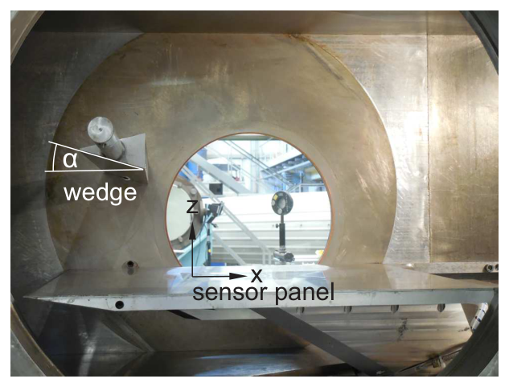
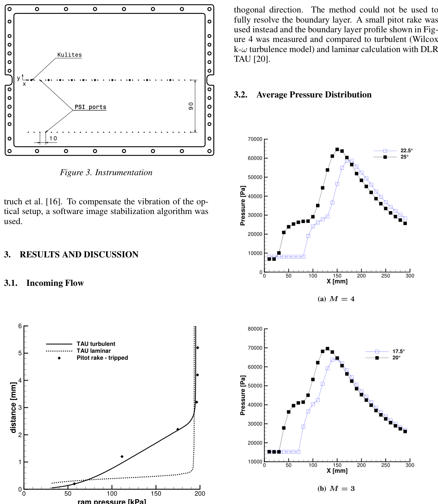
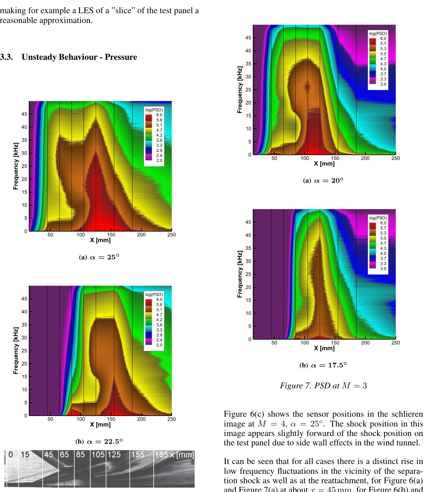
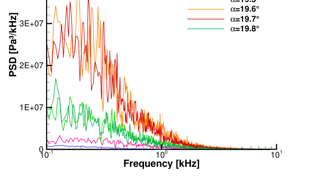

01中文摘要
在DLR科隆超声速与高超声速技术部三声速风洞（TMK）中，对M=3和4下入射激波与平板边界层的干扰开展实验。模型装有12个高频压力传感器（采样100 kHz），并采用高速纹影；装置可快速转动激波发生器，从而在一次风洞运行中测试不同楔角。分析了干扰区静压分布与高频压力脉动的空间、时间频率特征。结果表明：在分离起点和再附附近，1 kHz以下的低频脉动显著增强；分离区内还激发更高频率（约25–30 kHz）。这些结果与高速纹影得到的频率和流场拓扑进行了对比。
原始摘要（英文/原文）
Experiments on shock-wave/boundary-layer interaction of an impinging shock on a flat panel at Mach numbers of 3 and 4 were conducted in the Trisonic Wind Tunnel (TMK) of the Supersonic and Hypersonic Technologies Department at DLR, Cologne. To obtain high frequency data, the model was equipped with 12 high-speed pressure transducers for measurements at 100 kHz and highspeed schlieren photography was used. The experimental setup is designed for quick rotation of the shock generator allowing testing at different ramp angles during one wind tunnel run. The static pressure distribution and high speed pressure fluctuations in the interaction area were analysed with regard to the spatial and temporal distribution of occurring frequencies. At the beginning of the separation and near the reattachment, a strong increase of low frequency fluctuations of up to 1 kHz was observed, while in the separated area also higher frequencies were excited. These results were compared to the frequencies and flow topology found in the high-speed schlieren videos.
02阅读说明
实验研究（超音速风洞实验，高频压力测量 + 高速纹影）。材料为8页会议论文全文，含带页码文本、13项图件清单；正文无解析公式。图件齐全，但文本层存在表格/图轴错位与乱码（Table 1 表头、图5坐标等），已回读原PDF第2–3页核对表1、模型几何、仪器与压力分布。信息完整度较高；PSD 的具体幅值与部分图例数值受解析限制，标注为图读值。 文章类型：会议
03一句话核心与三句话摘要
M=3/4 可动楔入射激波干扰实验：分离起始与再附处低频脉动陡增，分离区 25–30 kHz 增强。
- SWBLI 的非定常性经数十年研究仍未充分理解，但直接影响航天运载系统设计与结构疲劳，且缺乏同步的高频、非接触实验数据（第1页）。 原文明确
- 在 DLR TMK 暂冲式风洞中，以可动楔产生入射激波，M=3、4、多个楔角工况下用12个 Kulite（100 kHz）与 20/90 kHz 高速纹影同步测量平板湍流边界层干扰（第1–3页）。 AI概括
- 结果表明分离激波与再附附近低频（<1 kHz）脉动陡增，分离区内高频在 25–30 kHz 增强，低频为无离散峰的宽带且 PSD 随时间强烈变化，作者据此提醒短时 LES/DNS 对比须谨慎（第4–7页）。 AI概括
04核心内容清单
| 要点 | 类型 | 重要性 | 原文依据 | 属性 |
|---|---|---|---|---|
| TMK 暂冲式风洞、0.6×0.6 m 试验段；可动楔可在单次风洞运行内快速改变楔角，楔跨满试验段以保证二维。 | 实验设施/模型 | A | 第2页 §2.1–2.2，图1、图2 | 原文明确 |
| 12个高频 Kulite（2个 XTL-123CEG-190M，>175 kHz；10个 XCQ-062，>240 kHz）以 100 kHz 采样，另有48个 PSI 稳态压力孔。 | 测量系统 | A | 第2–3页 §2.3，图3 | 原文明确 |
| 高速纹影 20 kHz（1024×200）与 90 kHz（512×176），用 OpenCV 高斯滤波+Canny 边缘检测跟踪分离激波位置。 | 测量系统 | A | 第2–3页 §2.3 | 原文明确 |
| 来流湍流度 1.9%（流向）、2.3%（正交）；M=3 边界层厚度约 4.5 mm。 | 来流条件 | B | 第3页 §3.1；第6页 | 原文明确 |
| 静压分布表明存在“相当大”的分离区：M=4 α=25° 压力平台约 x=60–90 mm，二次压升始自 x≈100 mm。 | 平均流场 | A | 第3–5页，图5(a) | 原文明确 |
| 分离激波附近低频（<1 kHz）脉动陡增，位置对应静压初始上升点（M=4 α=25° 约 x=45 mm；α=22.5° 约 x=85 mm）。 | 非定常现象 | A | 第4页，图6、图7 | 原文明确 |
| 分离区内低频脉动下降数个量级，但高频 PSD 上升；M=3 α=20° 自 x≈75 mm 起、峰值 x≈100 mm，至约 30 kHz。 | 非定常现象 | A | 第5页，图7(a) | 原文明确 |
| 再附区出现第二次低频脉动增强，随后向下游快速衰减。 | 非定常现象 | A | 第5页，图9 | 原文明确 |
| 低频运动没有离散频率，表现为 1 kHz 以下的宽带抬升；PSD 随时间强烈变化。 | 结论 | A | 第5页；第7页第4节 | 原文明确 |
| 楔角 0.1° 步长扫描（19.2–19.8°）时，x=45 mm 处 PSD 在 α=19.6–19.7° 最大，说明结果对激波相对测点位置极敏感。 | 参数敏感性 | B | 第6页，图11 | 原文明确 |
| 纹影跟踪的激波位置谱：M=4 α=25° 低频起伏强，M=3 α=20° 较弱，均无离散峰。 | 流场非定常 | B | 第6页，图13 | 原文明确 |
| 100 kHz 采样无法解析 u∞/δ≈130 kHz 的边界层特征频率；传感器间距可能低估压力脉动峰值。 | 局限 | B | 第4页；第6页 | 原文明确 |
05引言：研究问题与领域缺口
研究问题：入射激波/湍流边界层干扰的非定常行为及其空间-时间频率分布。【原文明确】SWBLI 在超音速流动中因逆压梯度导致边界层分离，分离激波在亚音速层内上游传播，形成约 1 kHz 量级的低频结构运动，同时高频脉动也被放大（第1页）。领域缺口：Dolling 指出尚无统一理论解释大量实验现象，建议将 CCD 相机或激光等非接触高速测量与高频压力传感器结合，并辅以高保真 LES（第1页）。目标：在 M=3、4 下获取干扰区静压分布与高频压力脉动，分析频率的空间与时间分布，并与高速纹影流场拓扑对照（第1页摘要）。【AI概括】应用背景：为计划中的弹性板流固耦合实验及 SFB-TRR40 耦合 LES 验证提供参考数据集（第1–2页）。
06流动条件与几何构型
| 项目 | 数值/描述 | 依据 | 备注 |
|---|---|---|---|
| 风洞 | DLR TMK 暂冲式；Ma 0.5–4.5（加热+引射可达5.7）；试验段 0.6×0.6 m；喷管型面可变 | 第2页 §2.1 | |
| M=2.5 来流（表1） | p∞=21.2 kPa，T∞=126.7 K，v∞=567 m/s，Re∞=37.7×10⁶ m⁻¹ | 第2页 Table 1 | 表1列出但正文结果主要用 M=3、4 |
| M=3.0 来流（表1） | p∞=15.6 kPa，T∞=97.2 K，v∞=595 m/s，Re∞=49.4×10⁶ m⁻¹ | 第2页 Table 1 | |
| M=3.5 来流（表1） | p∞=11.7 kPa，T∞=83.2 K，v∞=643 m/s，Re∞=55.1×10⁶ m⁻¹ | 第2页 Table 1 | 表1列出但正文结果主要用 M=3、4 |
| M=4.0 来流（表1） | p∞=8.7 kPa，T∞=64.9 K，v∞=650 m/s，Re∞=70.1×10⁶ m⁻¹ | 第2页 Table 1 | |
| 几何：底板与楔 | 底板前缘 x=−220 mm，楔角 10° 指向下壁；楔转轴 x=−108 mm、z=182.5 mm；楔宽与试验段等宽（二维） | 第2页 §2.2，图1、图2 | |
| 楔角定义 α | 试验板与楔下表面之间的夹角 | 第2页 §2.2，图1 | |
| 边界层状态 | 前缘人工转捩，湍流边界层；M=3、x=−70 mm 剖面与 TAU k-ω 对比 | 第2–3页，图4 | |
| 工况 M=4、α=22.5° | PSD 与静压测量；图6(b)、图5(a) | 第3–4页 | |
| 工况 M=4、α=25° | PSD 与静压测量；图6(a)、图5(a)；纹影示例与激波跟踪 | 第3–6页 | |
| 工况 M=3、α=17.5° | PSD 与静压测量；图7(b)、图5(b) | 第3–4页 | |
| 工况 M=3、α=20° | PSD、静压与纹影；图7(a)、图5(b)、图8–图10、图12、图13 | 第3–6页 | |
| 变角扫描 | M=3，α=19.2°→19.8°，步长 0.1°，x=45 mm 测点 | 第6页，图11 | |
| 二维性检查 | 除中心线外，在 y=−90 mm 处另测压力分布 | 第3页，图3 | |
| 来流湍流度 | 1.9%（流向）、2.3%（正交），Laser-2-Focus 测量 | 第3页 §3.1 |
07核心现象与关键参数
| 参数 | 定义 | 数值 | 关系/说明 | 依据 |
|---|---|---|---|---|
| δ | 边界层厚度（M=3 来流，用于特征频率估算） | ≈4.5 mm | u∞/δ ≈ 600/0.0045 ≈ 130 kHz | 第6页 |
| u∞/δ | 边界层特征频率 | 约 130 kHz（u≈600 m/s，δ=4.5 mm） | 超出 100 kHz 采样可解析范围 | 第6页 |
| f_low | 分离激波/再附附近的低频脉动频带 | <1 kHz，宽带无离散峰 | 在分离激波与再附处 PSD 陡增 | 摘要第1页；第4–5页；第7页 |
| f_high | 分离区内增强的高频带 | 约 25–30 kHz（M=3 α=20°，x≈75–100 mm） | 低频下降后高频 PSD 抬升 | 第5页；第7页 |
| x_sep,shock | 分离激波附近 PSD 增强位置（对应静压初始上升） | M=4 α=25° 约 x=45 mm；M=4 α=22.5° 约 x=85 mm | 与图5 初始压升位置对应；差异归因于 Kulite 空间分辨率低于 PSI | 第4页 |
| x_reatt | 再附区低频增强起始位置 | M=4 α=25° 约 x=100 mm | 与图5(a) 二次压升位置一致 | 第5页 |
| p_peak | 壁面静压峰值（图5读数） | M=4 α=25° 约 6.5×10⁴ Pa（x≈150 mm）；M=3 α=20° 约 7.0×10⁴ Pa（x≈155 mm） | 相对来流 p∞ 分别约 7.5 倍与 4.5 倍 | 第3页图5（图读值，AI判读） |
| α_PSDmax | x=45 mm 处 PSD 最大的楔角 | α=19.6–19.7°（M=3，扫描 19.2–19.8°） | 微小激波位置变化导致显著压力信号差异 | 第6页，图11 |
| f_s | Kulite 采样率 | 100 kHz（Nyquist 50 kHz） | 限制可解析最高频率 | 第2–4页 |
| PSD 单位 | 功率谱密度 | Pa²/kHz（图6、7、10、11 标注） | Welch 法、50% 重叠、Hann 窗、块平均 | 第4页 |
08方法与数据
实验研究。【原文明确】设施为 DLR Cologne 的 TMK 暂冲式风洞，Ma 0.5–4.5，加热并加引射可达 5.7，试验段矩形 0.6×0.6 m，喷管型面可变（第2页）。模型由底板、可安装传感器板的平板和可转动楔组成；楔跨满试验段宽度以获得二维流场；底板前缘 x=−220 mm 处有 10° 楔角指向下壁，前缘人工转捩（第2页）。测量：2 个 Kulite XTL-123CEG-190M（特征频率 >175 kHz）置于试验板上下游，板上 10 个 Kulite XCQ-062（>240 kHz），共12个，NI PXIe 4331 24位桥路模块以 100 kHz 采样；另有48个 PSI 压力孔用于稳态压力（第2–3页）。纹影：Photron Fastcam SA-X，20 kHz/1024×200 像素与 90 kHz/512×176 像素，OpenCV 高斯滤波 + Canny 边缘检测并做图像稳定（第2–3页）。来流：Laser-2-Focus 测湍流度，皮托管耙测边界层剖面并与 DLR TAU 的 Wilcox k-ω 湍流及层流计算对比（第3页）。PSD：信号分块、50% 重叠、Hann 窗、Welch 法后块平均（第4页）。文中未给出定量不确定度；仅指出传感器离散布置可能低估峰值、纹影因侧壁效应与板面激波位置不完全一致（第4、6页）。
| 项目 | 内容 | 依据 | 备注 |
|---|---|---|---|
| 实验类型 | 风洞实验：入射斜激波冲击平板湍流边界层；高速压力 + 高速纹影 | 第1页摘要；第2–3页 | |
| 风洞 | TMK 暂冲式，Ma 0.5–4.5，0.6×0.6 m 试验段，喷管型面可变 | 第2页 §2.1 | |
| 模型 | 底板 + 可换传感器板 + 可转动楔；楔等宽以获得二维流场；前缘转捩 | 第2页 §2.2 | |
| 高频压力 | 2×Kulite XTL-123CEG-190M（>175 kHz）+10×Kulite XCQ-062（>240 kHz），共12个；100 kHz 采样；NI PXIe 4331 24位 | 第2–3页 §2.3 | |
| 稳态压力 | 48个 PSI 压力孔，高空间分辨率 | 第2页 §2.3；第3页 | |
| 纹影 | Photron Fastcam SA-X；20 kHz/1024×200 与 90 kHz/512×176；OpenCV 高斯滤波+Canny；软件图像稳定 | 第2–3页 §2.3 | |
| PSD 处理 | 分块、50% 重叠、Hann 窗、Welch 法、块平均；未给块长 | 第4页 | |
| 来流湍流度 | Laser-2-Focus Velocimetry，气溶胶示踪；1.9%/2.3% | 第3页 §3.1 | |
| 边界层剖面 | 小型皮托管耙测量，与 DLR TAU（Wilcox k-ω 湍流、层流）对比 | 第3页 §3.1，图4 | |
| 二维性验证 | 中心线与 y=−90 mm 两处静压分布比较 | 第3–4页 | |
| 不确定度 | 文中未给出定量不确定度；仅讨论传感器间距/分辨率导致的峰值低估与纹影侧壁偏差 | 第4、6页 | 缺失项，写作“文中未提及” |
| 重复性 | 文中未提及 | 全文 |
09核心推导与公式
原文未给出从守恒律出发的完整解析推导；以下仅列出材料中可核对的定义或建模链，不补写教科书推导。
本文为纯实验研究，文中未建立解析模型或推导；只给出实验数据处理链（Welch PSD 估计、纹影边缘跟踪）与边界层特征频率 u∞/δ 的量级估算。
关键假设
- 无模型假设；PSD 采用分块、50% 重叠、Hann 窗与块平均（第4页）
- 纹影图像经高斯滤波与 Canny 边缘检测提取激波位置，并做图像稳定（第3页）
- 边界层特征频率以 u∞/δ 估算，u≈600 m/s、δ=4.5 mm（第6页）
适用边界：无解析标度关系，不能据此预测其他 Mach/楔角下的 L 或频率；PSD 幅值受传感器间距、采样率与分块长度影响（第4、6页）。
10结果：主要发现与关键证据
【原文明确】静压分布（中心线，PSI）显示形成了“相当大”的分离区：M=4、α=25° 时压力平台约在 x=60–90 mm，二次压升自 x≈100 mm 开始；M=3、α=20° 与 M=4、α=22.5° 同样存在明显分离（第3–5页、图5）。PSD 空间分布（图6、图7）显示：分离激波附近与再附处低频（<1 kHz）脉动显著增强，例如 M=4 α=25° 约 x=45 mm、α=22.5° 约 x=85 mm 处；分离区内低频下降数个量级，但高频 PSD 上升，M=3 α=20° 时约从 x=75 mm 起、峰值在 x≈100 mm，可延伸至约 30 kHz（第4–5页）。再附后脉动再次快速下降（第5页）。图8、图9 给出 x=45、65、105、155 mm 处 PSD 随时间的变化，显示同一测点在不同时段谱形差别很大（第5页）。楔角以 0.1° 步长从 19.2° 扫到 19.8° 时，x=45 mm 处 PSD 在 α=19.6–19.7° 达最大（第6页、图11）。纹影边缘跟踪（图13）显示 M=4 α=25° 的分离激波位置低频起伏强，M=3 α=20° 明显较弱，二者均无离散峰而为宽带（第6页）。
| 发现 | 证据 | 证据类型 | 强度 | 位置 | 属性 |
|---|---|---|---|---|---|
| 分离激波附近与再附处低频（<1 kHz）压力脉动显著增强，位置与静压初始上升/二次压升对应。 | 图6、图7 的 PSD 空间分布；图8、图9 的时频谱；正文指出 M=4 α=25° 约 x=45 mm、α=22.5° 约 x=85 mm。 | 实验数据（PSD） | 强 | 第4–5页 | 原文明确 |
| 分离区内低频脉动下降数个量级，但高频（约25–30 kHz）PSD 增强，M=3 α=20° 时约从 x=75 mm 起、峰值 x≈100 mm。 | 图7(a) 及第5页文字描述；结论第7页再次确认 25–30 kHz。 | 实验数据（PSD） | 强 | 第5页；第7页 | 原文明确 |
| 低频运动没有离散频率，而是 1 kHz 以下的宽带抬升。 | 第7页结论明确“no discrete frequencies... broadband rise”；图8–图10 谱形无尖峰。 | 结论 | 强 | 第7页 | 原文明确 |
| PSD 随时间的强烈变化意味着短时间窗频谱可能完全失真，与短时长 DNS/LES 对比时应考虑。 | 图8、图9（x=45、65、105、155 mm）显示同测点不同时段谱形差别很大；作者直接给出该提醒。 | 方法学结论 | 中 | 第5页 | 原文明确 |
| 楔角仅变化 0.1° 就能显著改变 x=45 mm 处的 PSD，最大值出现在 α=19.6–19.7°。 | 图11：α=19.2–19.8° 七条谱线；正文说明对应激波位置相对测点的微小变化。 | 参数敏感性 | 中 | 第6页 | 原文明确 |
| 纹影跟踪的激波位置低频起伏在 M=4 α=25° 强、M=3 α=20° 弱，且为宽带无离散峰。 | 图13 的激波位置 PSD（0–1 kHz）；第6页文字。 | 流场测量 | 中 | 第6页 | 原文明确 |
| 来流湍流度低（1.9%/2.3%），且 M=3 边界层 δ≈4.5 mm 对应 u∞/δ≈130 kHz，超出 100 kHz 采样的可解析范围。 | 第3页 Laser-2-Focus 结果；第6页特征频率估算。 | 来流表征/测量限制 | 中 | 第3页；第6页 | 原文明确 |
| 中心线与 y=−90 mm 的静压分布一致，支持流场二维近似。 | 第3–4页说明；图5 为两种展向位置测量的一部分。 | 实验验证 | 中 | 第3–4页 | 原文明确 |
11机制解释与论证链
【原文明确】压力跃升导致边界层增厚与分离，分离激波在上游亚音速层内前后运动，从而在分离起始附近产生强烈低频压力脉动；再附处流动重新压缩并伴随第二个低频增强区；分离区内平均压力近平台，低频脉动下降，但剪切层/分离区动力学使约 25–30 kHz 的高频 PSD 抬升（第4–5、7页）。【AI推断】高频增强与分离剪切层内小尺度结构或分离泡脉动有关的说法，原文未给出速度场证据，只能视为推断。作者还强调谱的非定常性：同一测点在不同时段的 PSD 可完全不同，说明干扰的“特征频率”并非常数（第5页）。
12讨论：结论、贡献与局限
【原文明确】机制解释：分离激波附近压力脉动的增强可归因于分离激波的运动；分离区内的低频下降对应近常压平台区，而高频增强出现在分离区、约 25–30 kHz（第4–5、7页）。再附区的第二次低频增强对应二次压升位置（第5页）。作者强调 PSD 随时间的巨大变化：若只取短时间窗，所得频谱可能完全不同，因此与短时长 DNS/LES 对比时必须考虑（第5页）。【AI推断】高频 25–30 kHz 可能与分离剪切层/分离泡内小尺度结构有关，但原文未给出速度场证据，属推断。局限：传感器空间分辨率有限，可能低估峰值；100 kHz 采样无法解析 u∞/δ≈130 kHz 的边界层特征频率；纹影受侧壁三维效应影响；无定量不确定度；未测分离泡内速度场；仅 M=3、4 与少数楔角。作者建议后续提高壁面测点密度并引入改进纹影或 PIV（第7页）。
作者结论
【原文明确】在 TMK 以 M=3、4 和多个入射激波角完成了可动楔 SWBLI 实验；高频压力与高速纹影给出了低频非定常性的空间与时间分布（第7页）。分离激波附近低频压力脉动强烈增强，分离区内下降数个量级后在再附附近再次增强；分离区内约 25–30 kHz 的 PSD 明显抬升。低频运动表现为 1 kHz 以下宽带，没有离散频率，且谱随时间强烈变化。作者认为这些结果本身不足以完整解释 SWBLI 动力学，但提供了数值模拟或任何模型都必须能够重现的数据集（第7页）。
主要贡献
- 提供了 M=3、4、多楔角下 100 kHz 高频压力与 20/90 kHz 高速纹影同步的 SWBLI 实验数据集。
- 给出低频脉动在分离激波与再附两处增强、分离区内高频 25–30 kHz 增强的空间分布图像。
- 揭示压力谱的强时变性，并据此提出短时长 LES/DNS 对比的方法学警告。
- 实现了单次风洞运行内快速改变楔角的可动楔设计，可高效覆盖多个干扰强度。
- 为后续弹性板流固耦合实验与 SFB-TRR40 耦合 LES 验证提供参考数据。
局限与未解决问题
【原文明确】传感器沿壁面离散布置，空间分辨率低于 PSI，可能低估压力脉动峰值，且无法精确定位最大脉动点（第4页）；100 kHz 采样不能解析 u∞/δ≈130 kHz（第6页）；纹影中的激波位置因风洞侧壁效应与试验板上的位置不完全一致（第4、6页）；未给出定量不确定度与重复性；仅 M=3、4 与少数楔角；未测量分离区速度场。【AI推断】25–30 kHz 高频增强的物理来源缺少速度场证据；楔角快速变化过程中的非定常效应未讨论；侧壁三维效应对 PSD 幅值的影响未量化。
13对高速流动与工程的意义
【原文明确】SWBLI 对吸气式发动机、过膨胀火箭喷管及受入射激波部件至关重要，并影响结构疲劳；本文数据可作为耦合 LES/DNS 的验证基准（第1、7页）。【AI推断】对进气道/隔离器设计的意义：分离激波与再附处的低频载荷是结构疲劳与流场畸变的主要来源，本文给出的空间分区（分离起始/再附）可直接用于布置测点与载荷评估；25–30 kHz 高频成分提示需关注薄壁面板的局部高频响应。方法上，可动楔+高频压力+纹影同步是低成本获取多干扰强度数据的可行方案；但本文不能给出分离泡长度、速度场或三维结构，也不能外推到其他 Mach/Re。
14核心图件




15可引用原文素材
| 原文短句 | 可支持的观点 | 位置 | 使用建议 |
|---|---|---|---|
| “a strong increase of low frequency fluctuations of up to 1 kHz” | 分离起始与再附附近低频脉动增强（摘要核心结论） | 摘要，第1页 | 可直接引作本文首要发现 |
| “no discrete frequencies ... but rather a broadband rise for frequencies below 1 kHz” | 低频非定常为宽带、无特征频率 | 第4节结论，第7页 | 与“1 kHz 低频运动”文献对比时引用 |
| “a strong rise in power spectral density of the pressure signals around 25-30 kHz” | 分离区内高频增强 | 第4节结论，第7页 | 说明分离区并非只有低频 |
| “the great changes of PSD over time” | 谱的强时变性 | 第5页 | 方法学讨论，提醒短时窗统计不足 |
| “should be taken into account for any comparison to short duration DNS or LES” | 与短时长数值模拟对比的注意事项 | 第5页 | 数值验证章节引用 |
| “about 130 kHz which could not be resolved with the sampling rate used” | 采样率限制，高频未解析 | 第6页 | 说明实验频率上限 |
| “even a small change in shock location leads to a significant difference” | 结果对激波相对测点位置极敏感 | 第6页 | 解释 α 扫描与测点布置的重要性 |
| “A separation of considerable size is obtained” | 实验形成了适合研究非定常性的大分离区 | 第3页 §3.2 | 说明工况有效性 |
16最终核验
| 核验项 | 结论 |
|---|---|
| 仅基于全文 | 是。仅使用 bundle 的带页码文本、图注与图件清单；Table 1、模型几何、仪器参数与图5 坐标已回读原 PDF 第2–3页核对，未引入外部知识。 |
| A 级要点有依据 | 是。A 级要点均对应摘要、第2–7页正文、图5–图9 或表1，逐条给出页码/图号。 |
| 属性标注 | 是。three_sentence、core_points、findings 均带属性；图读值（压力峰值）在图注/参数字段明确标注为 AI 判读。 |
| 覆盖范围 | IMRaD 四节、conditions（逐工况）、key_parameters、methods、derivation（exists=false）、mechanism、findings（8条）、quotes（8条）、figures（4张）、conclusions/limits/significance 均已填写。 |
| 无编造 | 未编造页码、图号、公式或数据；PSD 块长、定量不确定度、重复性等原文未给出者写“文中未提及”。压力峰值来自图5读数，已注明为图读值。 |
需回原文确认
- 图5 压力峰值的精确数值与坐标需回原图/数据核对，本文正文未给出数值表。
- PSD 分块长度、频率分辨率与幅值不确定度文中未提及，影响与 LES/DNS 的定量比较。
- 纹影侧壁效应导致激波位置偏差的量值未给出，图13 的激波位移能否定量换算为 L 的变化存疑。
- 分离泡长度 Lsep 未直接给出，只能由压力平台与 PSD 分区粗略推断。
- 25–30 kHz 高频增强的物理来源缺少速度场/PIV 证据。
- M=2.5 与 M=3.5 工况在表1中列出，但是否实际用于 PSD 分析文中未明确。
- α 的符号约定（压缩/扩张方向）与转轴几何对激波撞击点的影响需结合图1、图2 进一步核对。
17关联文献
依据标签、板块、构型与作者脉络自动关联，可据此追踪同一问题的前序与后续工作。
18引用格式
选择期刊风格后复制；出处保留原刊名。BibTeX 可直接用于 LaTeX。
引用格式
Daub, D., Willems, S. & Gülhan, A. 2015 Experimental results on shock-wave/boundary-layer interaction induced by a movable wedge. DLR elib. https://elib.dlr.de/96120/
PDF上传 PDF 并更新本页
本页缺少全文、摘要或图件时，可在浏览器本地补入 PDF。解析完全在本机完成，不上传网络；完成后会更新本页的 PDF 打开链接、原摘要、IMRaD 机器抽取、关键句与含图页面。复杂的公式语义与中文深度解读仍以原文和既有精读记录为准。